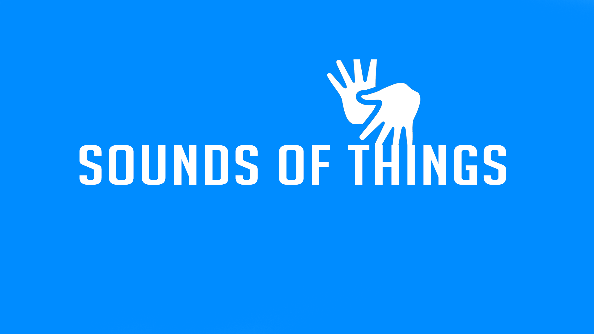

Sounds of Things
Home
(Página atual)
Dados da Surdez no Brasil

ESTIMATIVAS
QUANTIDADE APROXIMADA DE PESSOAS COM DEFICIÊNCIA AUDITIVA NO BRASIL
DEFICIÊNCIA AUDITIVA
DEFICIÊNCIA AUDITIVA
QUANTIDADE APROXIMADA
Algumas Dificuldades
10,7 milhões
Grande Dificuldade
2,7 milhões
Nasceram Com a Deficiência
9% dos surdos no Brasil
Adquiriram a Deficiência Com o Passar do Tempo
91% dos surdos no Brasil